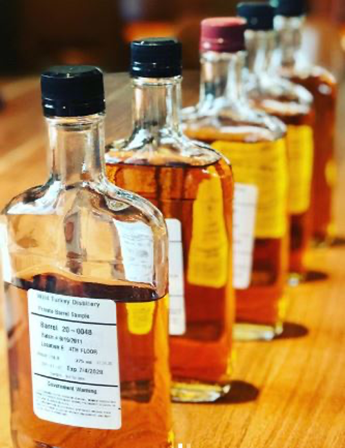
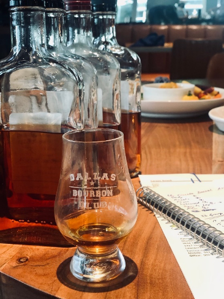

Russell's Reserve Private Selection
On May 28th, I was joined by a handful of DBC members at Hero's in downtown Dallas, in the shadows of the American Airlines Center. The agenda was pretty simple: pick a single barrel of Russell's Reserve for the Dallas Bourbon Club. Unafraid of the task at hand, I sat down with Brian Lowe, William Edwards, Chad Nelson, Dustin Sheppard, and Wild Turkey MEGA Fan, Aaron Konen.
While most Russell's Reserve barrel selections are done at site at Wild Turkey while being guided by a member of the Russell clan, times are a little funky right now. Given the complications from the Coronavirus and a major cutback in single barrel allocations for 2020; we were pretty lucky to get on the list for a Russell's Reserve pick.
Our host at Campari was all business. We had five 500 mL bottles lined up: all filled with barrel proof Russell's Reserve. These uncut samples were from three different rick houses from all over the Wild Turkey universe. Being the bourbon dorks that we are; we asked that the warehouse locations not be revealed to us so that we could focus on the whiskey inside the bottle. Because believe me, if I saw a Camp Nelson A selection in front of me, I would have stopped the selection right there, and chose that one: making it the shortest barrel selection ever. But, since everything was hidden away from us: we had a job to do. We were bourbon warriors: we had no time for hummus or toasted almonds; there was uncut Wild Turkey in front of us.
As previously mentioned, these samples were all straight from the barrel and clocking in around 117 proof. Additionally, unlike a lot of barrel selections: Wild Turkey doesn't like to let you taste it uncut and then again at bottle proof. No, this is all killer no filler: you are going to make your selection based on the unadulterated state. Let me be the first to say that Wild Turkey right out of the barrel is nothing short of magical. It's so good, so raw, so beautiful.
Moving into the samples, we got to work one by one. The first sample was a hot little tamale: a very hot nose with lots of alcohol vapor on it. It was hard to get past the stinging of the alcohol burn and uncover any depth on it. The taste was not that great either: heavy oak influence. However, the texture was thick and chewy aka Beautiful. This was just an ok bourbon and looking around the table confirmed my opinion: not the best thing I've ever had.
The second sample had a really unique nose: licorice and the earthy, savoryness of classic Wild Turkey. It kind of smells like old potpourri. That savory funkiness was present on the taste as well. This was an oaky and smokey corn whiskey. The texture was not as good as #1, but it was a really solid whiskey. The group was nodding their heads in agreement and appreciation.
For me, the nose on Whiskey #3 was totally on point and it had an outstanding texture. For me, the oak presence was a loft softer; this was a unique bourbon with soft edges. So far #3 was my leader in the clubhouse.
But then came Whiskies #4 & #5. Whiskey #4 had a delicious maple syrup nose. The taste was nearly sublime but it materialized back into a bold finished that stuck around awhile. While #4 was outstanding, Whiskey #5 was nothing to shake a stick at either. It had a nose like a pan of chocolate brownies coming out of the oven. It tasted like a brown sugar overload and finished with funky spice bomb.
The group was split on the pick. There was a ton of great whiskies in the field, except for Whiskey #1. So, when we held our first vote, it was immediately gone. After polling the team, Barrels #1 and #3 were immediately removed. This left us with three samples in the second round. We tasted these blind as well so we will now call them Whiskies A, B, & C.
Whiskey A was a classic Wild Turkey: bold and beautiful. However, the texture was thin. But it overcame that weak viscosity with an outstanding finish of black pepper. The next up was Whiskey B. For me, this was not great; it tasted grainy and the nose didn't jive with me. Not a fan. And the final selection of the second round was Whiskey C. This bourbon had a much improved nose, great caramel notes and that quintessential funkiness at the end that morphed into a long and lingering finish.
One voice in our group asked us to vote again. Whiskey B was quickly voted out. So the final round came down A & C. After tasting both, it was put to a vote. That vote was pretty quick and decisive. By a count of six votes to one, Whiskey C was our selection. Our Campari hosts then revealed this to be Whiskey #4.
Once our selection was made, it was revealed where each sample came from, along with some tasting notes from Eddie.. According to Eddie, Warehouse B produces whiskey that's "More the typical Wild Turkey: bigger, bolder taster." And that's where this beauty of a whiskey came from. It also makes a ton of sense: the palates in this group are huge Wild Turkey fans. So it's not surprising that this group chose a very delicious, very on profile Russell's Reserve: we selected the best possible version of Wild Turkey that was put in front of us. And I'm damn proud of it.
As always, I'm very excited about another DBC selection. The organization has selected another great barrel pick and I'm so happy it's Russell's Reserve. This whiskey is fuzz under ten years old and will be bottled at 110 proof. Expect this one closer to the end of the year...until then....I can't wait!